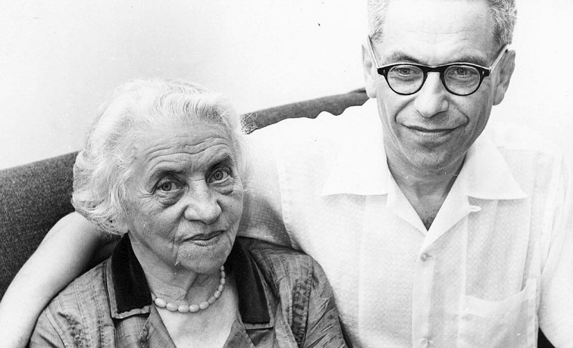

Into the tech-enabled product ideation business
Because ideas matter and like words they almost cost nothing to produce but could be very expensive


seems like nobody worked on logistic models that simulated how logistics transport of product and people could be designed using electric only with the limitation of distance range and charging time. Some maybe did it without caring about mathematics and using dynamic system theory and optimal transport theory, knowing nothing about Monge-Kantorovich. I cared about it and it connected me to the work of Cedric Villani back into mathematicians of the early days of math. While I may sounds and seems like someone knowing nothing about mathematics and who used to know about it, I am deeply grounded in this field who still interest and inspire me and I could almost say that it is only core field which makes me be eager to not have financial constraints and be really thinking without caring about money for living because otherwise I am scared to live as Erdos did, being a poor man really struggle me and I am actually one.
I am into the business of tech-enabled product ideas generation, generating business ideas was and is still a part of the business of consulting groups like Boston consulting group and McKinsey and glad to be an expert and almost the first startup into a portion of this market of business idea generation. it’s due to my bravery and cleverness but I think my willingness of learning which after a short but very wasteful period of break restarted at a level that made me almost crazy. I am still thinking if am not still crazy. Heard that Erdos used to ask out loud others if he was still alive and those who reported this almost all said that he was sincere when he was asking this question.
So many tech-enabled products to build for you. Some of them have already been built and are being operated by others who were just eager to succeed financially by making you their products and selling you to other companies and valuing their businesses billions of dollars at the cost of your precious attention.
At some point in time, I just decided to not take this path and to do things with purpose and with your permission even if we could do the opposite because of our understanding of network effects and graph theory but doing this while leaving other poor will not please Erdos who spent time and sacrificed his own wealth to help us understand graphs by being interested in math only not anything else. It is said that Erdos used to be angry about God and naming him badly but I am not the judge of the creation neither de attorney of Erdos between his conflict with God but I do believe that his works are benefic for me as a believer and I hope and wish that he has peace with God because I believe Him as being very powerful and undefeatable like the tech-enabled business that I have in mind and into my shelves.
PS : Many said that Erdos had a great and indescribable relationship with his mother but for my part, I should confess that I think I am actually not.